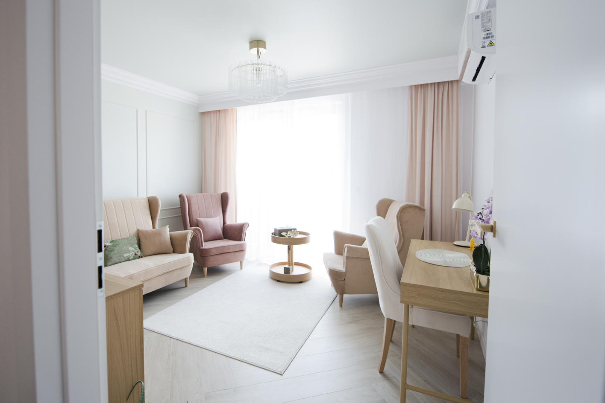
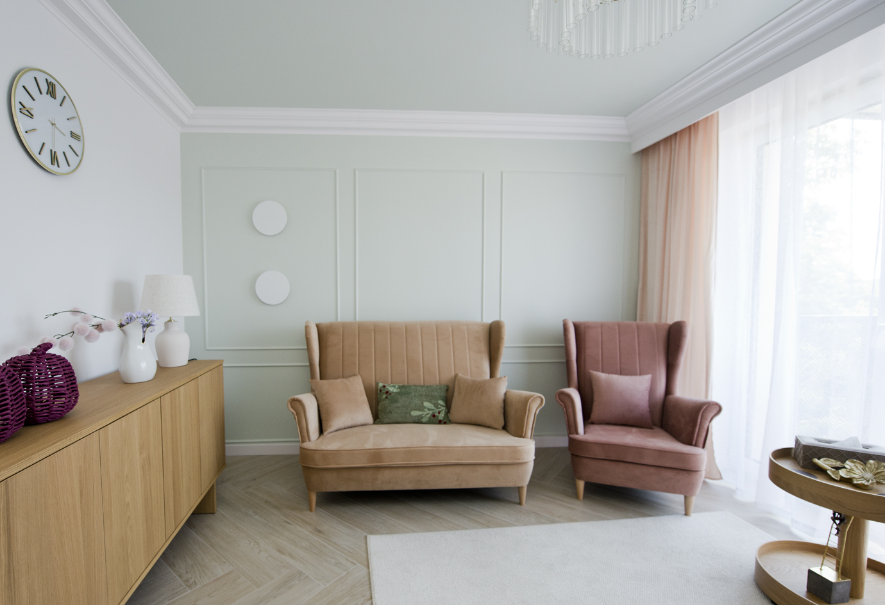
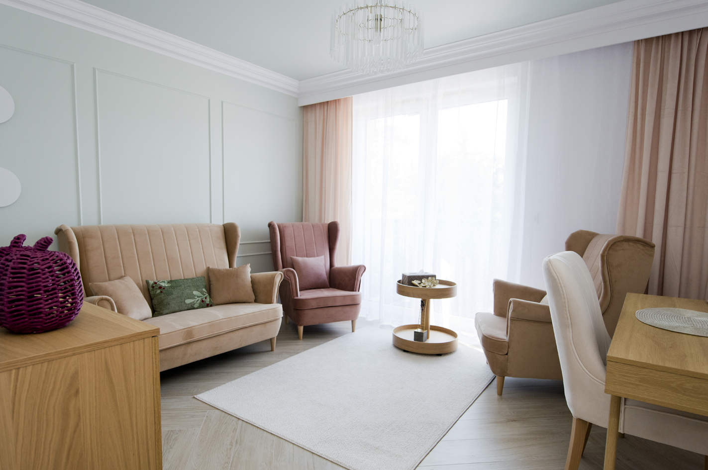

Agata Morgowniczy-Majewska
Jestem psychoterapeutką w trakcie szkolenia w Warszawskiej Szkole Psychoterapii Gestalt, akredytowanej przez EAGT. Prowadzę indywidualną psychoterapię oraz pracuję z grupami.
Moja droga do psychoterapii była procesem odkrywania siebie, prowadziła mnie od świata logiki, przez doświadczenia własnego rozwoju, pracę z ludźmi i edukację. Ukończyłam matematykę na Uniwersytecie Wrocławskim, studia podyplomowe „Pedagogika z arteterapią” na SWPS oraz Szkołę Trenerów Meritum, dzięki której zostałam trenerką kompetencji miękkich.
Uczestniczyłam w wielu kursach i warsztatach, m.in. z zakresu NVC (Porozumienia bez Przemocy), metody Lowena, Core Energetics, TRE, Kręgów Kobiet, treningów interpersonalnych i terapeutycznych.
Od lat pracuję również w szkole, gdzie towarzyszę dzieciom, młodzieży i dorosłym w różnych momentach życia. To doświadczenie pozwala mi widzieć, jak zmienia się świat w którym żyjemy i jak wiele wyzwań niesie codzienność dla nas wszystkich.
Prowadzę warsztaty rozwojowe oraz cykliczne spotkania dla rodziców nastolatków, tworząc przestrzeń do zatrzymania się, wymiany doświadczeń i poszukiwania nowych sposobów bycia w relacji.
W terapii najważniejsza jest dla mnie relacja, żywe spotkanie dwóch osób. Wierzę, że właśnie w bezpiecznej, autentycznej relacji może pojawić się zaufanie, które pozwala przyglądać się temu, co trudne, odkrywać własne schematy i stopniowo szukać nowych możliwości.
Towarzyszę Ci z uważnością i szacunkiem dla Twojego tempa. Wspólnie przyglądamy się temu, co pojawia się w myślach, emocjach oraz w odczuciach płynących z ciała. Interesuje mnie nie tylko to, co się wydarza, ale również jak tego doświadczasz tu i teraz.
Dbam o stworzenie miejsca, w którym możesz być sobą, bez potrzeby dopasowywania się, udowadniania czy ukrywania ważnych części siebie.
W swojej pracy kieruję się zasadami poufności, autentyczności i szacunku. Pracuję zgodnie z kodeksem etycznym EAGT oraz regularnie korzystam z superwizji.
Obszary w jakich towarzyszę.
Młoda dorosłość
Zagubienie na początku dorosłego życia, trudność w usamodzielnianiu się, poszukiwanie własnej drogi i tożsamości.
Rodzicielstwo
Bezsilność, trudne emocje w kontakcie z dzieckiem, przeciążenie, wypalenie rodzicielskie, próba zrozumienia buntu i potrzeb nastolatka.
Lęk
Ataki paniki, przewlekłe napięcie, życie w poczuciu zagrożenia.
Wewnętrzny świat
Trudny do nazwania smutek, niskie poczucie własnej wartości, surowość wobec siebie, poczucie bycia „niewystarczającym”.
Relacje
Samotność w bliskości, trudność w budowaniu więzi, lęk przed odrzuceniem lub samotnością, skomplikowane relacje rodzinne.
Granice
Trudność w mówieniu „nie”, poczucie przekraczania własnych granic, problemy w relacjach z autorytetami.
Praca i wypalenie
Przewlekłe zmęczenie, przeciążenie, utrata sensu i kontaktu z tym, co dla Ciebie ważne.
Towarzyszę również osobom, które czują cierpienie lub wewnętrzny dyskomfort, ale nie zawsze potrafią nazwać jego źródło, i chcą lepiej poznać siebie.
„Codzienność, Miłość i Relacje”
Prowadzę cykliczne spotkania dla rodziców nastolatków. To przestrzeń na zatrzymanie się, dzielenie doświadczeniami i szukanie sposobów na budowanie bardziej świadomej relacji z dzieckiem w tym ważnym i wymagającym czasie.
Dobre Więzi
ul. Partynicka 9/3, 53-031 Wrocław



Centrum Psychoterapii Granat
ul. Igielna 14/15/2, 50-117 Wrocław
https://wroclawpsychoterapia.com.pl/zespol/
Zapraszam, jeśli czujesz, że możemy razem spróbować nazwać to, co trudne i poszukać Twojej własnej drogi do zmiany.
Preferuję kontakt przez SMS lub e-mail. Odpiszę Ci w najszybszym możliwym terminie.
Umów się na konsultację.
Telefon: (+48) 606328555
Email: agata.j.m.majewska@gmail.com
Miejsce: ul. Partynicka 9/3, 53-031 Wrocław